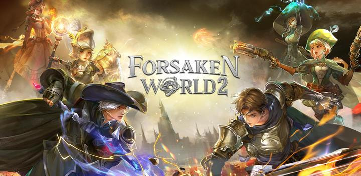

Panduan Lengkap Bermain Forsaken World 2: Strategi dan Tips Ampuh Menaklukkan Dunia Grandmundo

Forsaken World 2 adalah MMORPG mobile yang menghadirkan dunia fantasi barat luas dengan grafis 3D memukau dan gameplay real-time yang seru. Dikembangkan oleh VNGGames dan Perfect World Games, game ini mengajak kamu menjelajah dunia Grandmundo yang penuh konflik epik antara dewa dan iblis. Bagi pemula, memahami berbagai fitur dan mekanisme dalam game ini sangat penting agar cepat berkembang dan menikmati petualangan secara maksimal. Berikut panduan lengkap yang akan membantu kamu memulai perjalanan di Forsaken World 2.
Memilih Kelas yang Tepat Sesuai Gaya Bermain
Forsaken World 2 menawarkan enam kelas unik dengan kemampuan dan gaya bertarung berbeda:
- Arcanist: DPS jarak jauh dengan serangan sihir elemen seperti Void Lightning dan Ice Meteor Storm, cocok untuk kamu yang suka damage magic.
- Gunner: DPS jarak menengah menggunakan dua senjata api, mengandalkan skill Burst Energy untuk serangan cepat dan mematikan.
- Demon Hunter: Semi tank dengan pedang besar dan kemampuan membuat pusaran angin, efektif di pertarungan jarak dekat.
- Hexblade: DPS jarak dekat dengan dua pedang dan sihir mematikan, mengandalkan skill Bursting Blade dan Hellfire Burning.
- Bloodraider: Kombinasi Physical dan Magic Attack dengan kemampuan regenerasi HP dari damage yang diberikan.
- Paladin: Kelas terbaru yang berperan sebagai healer dan tank, sangat penting dalam tim untuk mendukung dan bertahan.
Pilih kelas yang sesuai dengan gaya bermain kamu—apakah suka bertarung langsung, menyerang dari jauh, atau mendukung tim sebagai healer—karena pemilihan kelas akan menentukan peran dan strategi dalam permainan.
Maksimalkan Main Quest dan Daily Quest untuk Leveling Efisien
Main quest memberikan pengalaman (EXP) besar sekaligus membuka fitur dan area baru di Grandmundo. Selalu prioritaskan menyelesaikan quest utama agar progres leveling cepat dan kamu bisa menikmati konten lebih banyak. Selain itu, kerjakan daily quest setiap hari untuk mendapatkan EXP tambahan, gold, dan item penting yang mendukung upgrade karakter.
Manfaatkan Event dan Paket Pra-Registrasi
Forsaken World 2 rutin mengadakan event dengan hadiah menarik, termasuk paket pra-registrasi yang memberikan item langka seperti Divine Forging Stone, Enhance Stone, dan Bound Soul Crystal. Ikuti event dan klaim hadiah untuk mempercepat perkembangan karakter dan mendapatkan perlengkapan kuat tanpa harus mengeluarkan uang.
Upgrade Gear dan Skill secara Konsisten
Gear dan skill adalah kunci kekuatan karakter. Dapatkan material dari dungeon dan boss raid untuk meningkatkan kualitas dan level gear. Jangan lupa upgrade skill dan ultimate agar damage dan kemampuan bertahan meningkat. Fitur Arcania juga memungkinkan penambahan efek skill untuk strategi lebih variatif.
Bergabung dengan Guild untuk Fitur Sosial dan Perang Guild
Guild menjadi pusat aktivitas sosial dan kompetitif. Bergabung dengan guild memberikan akses ke event eksklusif, hadiah khusus, dan perang antar guild (GvG) yang seru. Selain itu, guild adalah tempat bertukar informasi, strategi, dan bantuan antar pemain, mempercepat progres kamu di game.
Kuasai Mode PvP dan PvE
PvE: Fokus pada dungeon, boss raid, dan quest naratif untuk mendapatkan gear langka dan material upgrade.
PvP: Arena 3v3, open PvP zone, dan battle royale menguji strategi dan refleks. Latihan rutin dan koordinasi tim sangat penting untuk menang.
Kombinasi PvE dan PvP membuat karakter lebih seimbang dan siap menghadapi berbagai tantangan.
Manfaatkan Fitur Revelation untuk Unlock Kartu Tersembunyi
Fitur Revelation adalah gameplay terbaru yang memungkinkan pemain mengumpulkan dan membuka kartu tersembunyi yang memberikan bonus stat seperti HP, defense, attack, armor penetration, dan skill pasif tambahan. Kartu ini bisa didapatkan melalui misi mingguan bernama Ekspedisi Lion Heart yang harus diselesaikan secepat mungkin untuk mendapatkan ranking tinggi dan hadiah kartu langka. Mengoptimalkan fitur ini akan membuat karakter kamu jauh lebih kuat dan fleksibel dalam bertarung.
Atur Kontrol dan UI Sesuai Kenyamanan
Forsaken World 2 menyediakan kontrol virtual joystick dan tombol skill yang dapat diatur ulang. Sesuaikan tata letak skill agar mudah diakses saat pertarungan. Gunakan mode auto-play untuk grinding saat offline, tapi aktifkan mode manual saat menghadapi boss atau PvP agar hasil maksimal.
Tips untuk Pemain Free-to-Play (F2P)
Bagi pemain yang tidak ingin top-up, fokuslah pada:
- Menyelesaikan quest dan event harian secara konsisten.
- Berpartisipasi aktif di guild untuk mendapatkan reward tambahan.
- Menggunakan hadiah login dan paket newbie.
- Memanfaatkan sistem trading untuk mendapatkan item yang dibutuhkan.
Strategi ini membantu kamu tetap kompetitif tanpa harus mengeluarkan uang.
Cara Menggunakan Sistem Trading dan Auction di Forsaken World 2
Forsaken World 2 menyediakan fitur Trading and Auction (Dagang dan Lelang) yang memungkinkan pemain untuk membeli dan menjual item, perlengkapan, hingga material langka antar sesama pemain. Berikut adalah panduan cara menggunakan sistem ini secara efektif:
1. Mengakses Fitur Trading and Auction
Fitur ini bisa diakses melalui menu utama dalam game, biasanya terdapat ikon khusus untuk Market atau Auction House. Di sana, kamu dapat melihat daftar item yang dijual oleh pemain lain, serta memasang item milikmu untuk dijual.
2. Menjual Item
- Pilih item yang ingin kamu jual dari inventory.
- Tentukan harga jual yang sesuai berdasarkan harga pasar atau nilai item tersebut.
- Kamu bisa memilih untuk menjual secara langsung (trade) atau melelang (auction) agar pemain lain dapat menawar harga.
- Setelah memasang item di pasar, tunggu pembeli yang berminat.
3. Membeli Item
- Cari item yang kamu butuhkan di daftar pasar atau auction.
- Untuk item yang dijual langsung, kamu bisa membeli dengan harga yang tertera.
- Untuk item yang dilelang, kamu bisa memasang tawaran harga dan bersaing dengan pemain lain.
- Setelah menang lelang atau membeli, item akan langsung masuk ke inventory kamu.
4. Manfaatkan Sistem Auction untuk Mendapatkan Item Langka
Auction memungkinkan kamu mendapatkan item langka dengan harga kompetitif. Pantau terus lelang dan sesuaikan tawaran agar tidak kehabisan item penting untuk upgrade karakter.
5. Tips Trading Efektif
- Selalu cek harga pasar sebelum memasang harga jual agar tidak terlalu mahal atau murah.
- Gunakan fitur pencarian dan filter untuk menemukan item yang tepat dengan cepat.
- Manfaatkan event dan promo dalam game yang kadang memberikan diskon atau bonus saat melakukan transaksi di auction.
6. Keuntungan Sistem Trading and Auction
- Membantu kamu mendapatkan item yang sulit didapatkan dari quest atau dungeon.
- Memungkinkan pemain untuk mendapatkan gold dengan menjual barang yang tidak terpakai.
- Mendorong interaksi sosial dan ekonomi antar pemain dalam dunia Grandmundo.
Dengan fitur Trading and Auction, Forsaken World 2 menghadirkan pengalaman MMORPG yang lebih hidup dan dinamis, di mana ekonomi pemain berperan penting dalam perkembangan karakter dan strategi bermain.
Perhatikan Spesifikasi Perangkat
Grafis dan fitur canggih Forsaken World 2 membutuhkan perangkat dengan spesifikasi menengah ke atas agar lancar dimainkan. Pastikan perangkat kamu mendukung agar pengalaman bermain tidak terganggu.
Cara Pra-Registrasi dan Mendapatkan Hadiah Eksklusif
Tahap pra-registrasi Forsaken World 2 memberikan akses awal dan hadiah menarik seperti gold, item upgrade, dan kesempatan memenangkan hadiah utama seperti iPhone 15 Pro Max. Kamu bisa mendaftar melalui Play Store atau situs resmi VNG Games dan klaim kode hadiah melalui email. Pra-registrasi diperpanjang hingga 12 Oktober 2024, jadi masih ada waktu untuk ikut.
Tips Top-Up dan Investasi dalam Game
Jika kamu memilih untuk melakukan top-up, manfaatkan promo dan diskon yang sering diadakan oleh mitra resmi seperti Topupgim untuk mendapatkan nilai terbaik. Prioritaskan pembelian item yang meningkatkan daya tahan dan damage karakter agar progres lebih cepat dan kompetitif di PvP.
Ikuti Update dan Event Resmi
Selalu pantau pengumuman resmi di media sosial Forsaken World 2 seperti Instagram, Facebook, dan Discord untuk info maintenance, update fitur baru seperti gameplay Oath, event musiman, dan hadiah eksklusif. Berpartisipasi aktif dalam event akan memberikan keuntungan besar dalam pengembangan karakter.
Forsaken World 2 adalah MMORPG mobile dengan dunia terbuka yang luas, grafis memukau, dan fitur gameplay yang lengkap. Dengan memilih kelas yang tepat, fokus pada quest dan event, serta memanfaatkan fitur sosial seperti guild dan sistem trading, kamu bisa cepat berkembang dan menikmati petualangan epik di Grandmundo. Jangan lupa eksplorasi fitur baru seperti Revelation dan atur kontrol sesuai kenyamanan agar pengalaman bermain semakin optimal. Baik pemain baru maupun veteran akan menemukan tantangan dan keseruan yang membuat Forsaken World 2 layak menjadi MMORPG favorit di Indonesia dan Asia Tenggara.
Kalau kamu ingin mempercepat perkembangan dan menambah koleksi item, jangan lupa manfaatkan kemudahan Top Up Forsaken World 2 di Topupgim. Promo menarik dan proses cepat siap membantu kamu jadi lebih kuat dan kompetitif dalam petualangan Grandmundo!